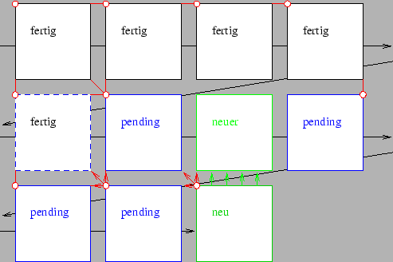

Nächste Seite: Bemerkung: Aufwärts: Gitterzellen zu den Ecken Vorherige Seite: Gitterzellen zu den Ecken Inhalt
Deshalb wird nun auch eine Liste von Würfeln, ,,pending_cubes``, also ,,anstehende Würfel`` habe ich sie getauft, durchlaufen, deren Zellindex im letzten Durchlauf noch als potentieller Nachbarwürfel eines noch kommenden neuen Würfels in Frage kam. Würfel, für die dies nicht mehr zutrifft, werden aus der pending_list gelöscht. Wird ein Nachbarwürfel gefunden , so wird die entsprechende Ecke des Nachbarwürfels als der aktuellen Ecke zugehörig markiert. Wird einer der acht Nachbarwürfel nicht gefunden, so wird dieser ebenfalls neu erzeugt. Alle neu erzeugten Würfel werden in die pending_list aufgenommen und es wird die nächste Ecke abgearbeitet.
|
 |